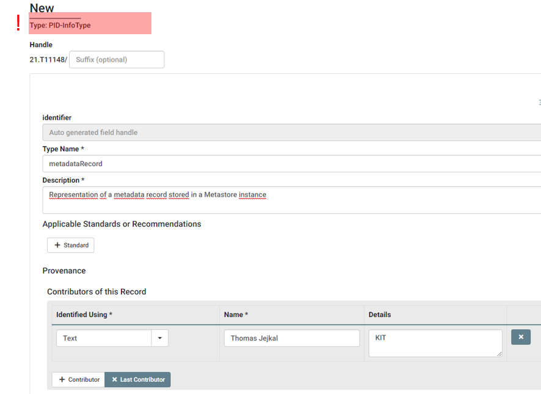
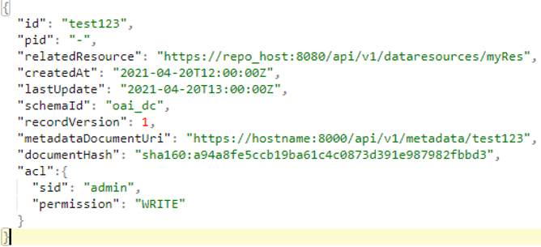

3.3 Register main Data Type
Finally, we arrived at the step where we collected everything in order to create our main Data Type. All these information are collected in our checklist, which we use now for defining this Data Type.
| Property | DTR Inquiry Result (Reuse, Extend, Create) |
|---|---|
| id | Reuse unicode-line-string (21.T11148/f1627ce85386d8d75078) |
| pid | Reuse identifier-general (21.T11148/38330bcc6a40ca85e5b4) |
| relatedResource | Reuse URL (21.T11148/e0efc41346cda4ba84ca) |
| createdAt | Reuse date-time-rfc3339 (21.T11148/3bfb2839a6967114bc3e) |
| lastUpdate | Reuse date-time-rfc3339 (21.T11148/3bfb2839a6967114bc3e) |
| schemaId | Reuse unicode-line-string (21.T11148/f1627ce85386d8d75078) |
| recordVersion | Reuse non_negative_integer (21.T11148/eca44a2ac007d5e126f5) |
| metadataDocumentUri | Reuse URL (21.T11148/e0efc41346cda4ba84ca) |
| documentHash | Reuse sha-checksum (21.T11148/66bf538937bf74bfc48a) |
| aclList | Create aclList (21.T11148/8b7b3f1b796a4dc1030f) |
At first, we create a new Data Type of Type PID-InfoType.

As before, we assign a Type Name, maybe a short Description and Contributor information. Afterwards, we add properties for each entry in our checklist assigning a Data Type Name, e.g., the value in the Property column of our checklist, and the TID of Existing Data Type, which is the PID value in the DTR Inquiry Result column. The Obligation we may or may not set to Mandatory, the Repeatable value should be set to No as each attribute of our structure can also appear once and Omit Names as Subsidiary should also stay No in that case, as we need to map the single values to the according properties by name. After transferring all properties we can save the metadataRecord Data Type and receive a new PID with value 21.T11148/6a29026053036431de11.
This PID now represents exactly the structure shown at the beginning:

We are finished now with this receipt. If you like, you can check the next page for possible applications of the defined Data Type.